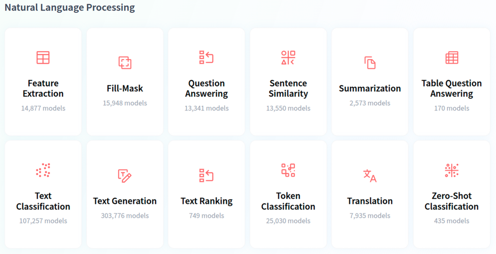

Tasks de Natural Language Processing (NLP) en Hugging Face

🔥 Introducción: El Poder de los Transformers
🎬 Demo en Vivo: "5 Líneas de código sencillas"
Instalación Rápida
pip install transformers torch
Ejemplo sencillo ✨
1 2 3 4 5 6 | |
No model was supplied, defaulted to distilbert/distilbert-base-uncased-finetuned-sst-2-english and revision 714eb0f (https://huggingface.co/distilbert/distilbert-base-uncased-finetuned-sst-2-english).
🎯 Tareas NLP Principales
| Tarea | Pipeline | Ejemplo de Uso |
|---|---|---|
| Análisis de Sentimientos | sentiment-analysis |
Redes sociales, reviews |
| Clasificación de Texto | text-classification |
Categorizar noticias, emails |
| Generación de Texto | text-generation |
Chatbots, escritura creativa |
| Traducción | translation |
Apps multiidioma |
| Resumen | summarization |
Resúmenes automáticos |
🏗️ Arquitectura Simplificada
Texto de Entrada → Tokenización → Modelo Transformer → Post-procesado → Resultado
🚀 Demo Interactiva:
Experimento 1: Sentimientos Multiidioma
1 2 3 4 5 6 7 8 9 10 11 12 | |
No funciona correctamente porque usamos pipeline("sentiment-analysis") sin especificar modelo, así que se carga el modelo por defecto de la librería, que suele ser un DistilBERT entrenado para sentimiento en inglés (positivo/negativo) sobre un dataset como SST‑2. La frase "I love this workshop!" probablemente se clasifique bien, pero "Este taller es aburrido" o "Je suis très content" pueden recibir resultados menos fiables porque el modelo está optimizado para inglés. Los emojis pueden interpretarse, pero de forma limitada.
Vamos a modificar el código especificando, por ejemplo, el modelo tabularisai/multilingual-sentiment-analysis (model="tabularisai/multilingual-sentiment-analysis"). Un modelo entrenado explícitamente para análisis de sentimiento multilingüe, pensado para manejar varios idiomas, incluido el español.
Modificamos el código y volvemos a probar.
1 2 3 4 5 6 7 8 9 10 11 12 13 14 15 16 17 18 19 20 | |
pipeline.
-
config.json,model.safetensors,tokenizer_config.json,vocab.txt,tokenizer.json,special_tokens_map.jsonson los ficheros que necesita el modelo (arquitectura, pesos, vocabulario, configuración del tokenizer, etc.). -
La descarga puede tardar (en nuestro caso ~541 MB de
model.safetensors), pero solo se hace la primera vez; después se reutiliza desde la caché local y ya no veremos esa descarga completa a menos que borremos la caché.
Si tras esas barras de progreso nuestro script se queda “parado”, normalmente es porque sigue ejecutando el pipeline sobre los textos (inferencia); si no aparece nada, revisa que tengas el print(...) dentro del bucle y que no haya errores posteriores.
config.json: 100%|███████████████████████████████████████████████████████████████████████████████████████████████████████████████████████████████████████| 851/851 [00:00<00:00, 9.89MB/s]
model.safetensors: 100%|███████████████████████████████████████████████████████████████████████████████████████████████████████████████████████████████| 541M/541M [01:10<00:00, 7.64MB/s]
tokenizer_config.json: 1.20kB [00:00, 2.69MB/s]
vocab.txt: 996kB [00:00, 9.65MB/s]
tokenizer.json: 2.92MB [00:00, 25.5MB/s]
special_tokens_map.json: 100%|██████████████
Experimento 2: Generación Instantánea
Otra tarea común de NLP es la generación de textos. La tarea de generación de texto implica la creación de texto nuevo, coherente y contextualmente relevante basado en un mensaje o entrada determinados. Esta tarea aprovecha los modelos de aprendizaje automático, particularmente los basados en el aprendizaje profundo (deep learning) y las redes neuronales, para producir texto similar al humano. En el siguiente fragmento de código, se muestra cómo utilizar el modelo [openai-community/gpt2](https://huggingface.co/openai-community/gpt2) para generar un párrafo de texto basado en una frase inicial:
1 2 3 4 5 6 | |
[{'generated_text': 'In this course, we will teach you how to build the best online games or use it to build your own. After this, this course covers: 1) how to make awesome games in Google Play and 2) how to develop a game based on'}]
max_length (el número máximo de tokens en el texto generado) y num_return_sequences (número de párrafos generados):
1 2 3 4 5 6 7 8 | |
🎯 ¿Por qué funciona tan bien?
El Secreto: Modelos Pre-entrenados
- Millones de parámetros entrenados en enormes datasets
- Transfer Learning: Conocimiento general aplicado a tareas específicas
- Fine-tuning: Adaptación a dominios específicos
Ventajas de Hugging Face
- ✅ Simplicidad: Una línea de código para tareas complejas
- ✅ Variedad: Miles de modelos disponibles
- ✅ Comunidad: Modelos compartidos y mejorados constantemente
- ✅ Flexibilidad: Desde uso básico hasta personalización avanzada
Retos a realizar
- 🏆 Reto 1: Detector de Emociones en Redes Sociales
- 🏆 Reto 2: Clasificador Inteligente de Noticias
- 🏆 Reto 3: Asistente de escritura creativa
Ahora que hemos visto algunos modelos de NLP en acción, es hora de crear nuestro primer proyecto real: un detector de emociones para redes sociales.
¿El objetivo? Ayudar a una empresa a monitorizar la percepción de su marca en X.
👉 Ir al Reto 1: Detector de Emociones